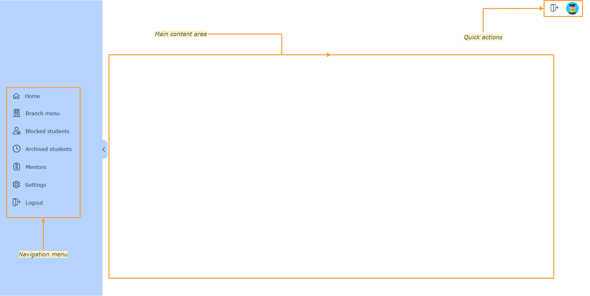
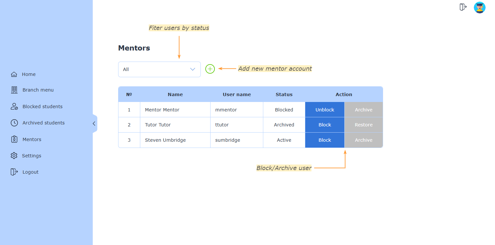
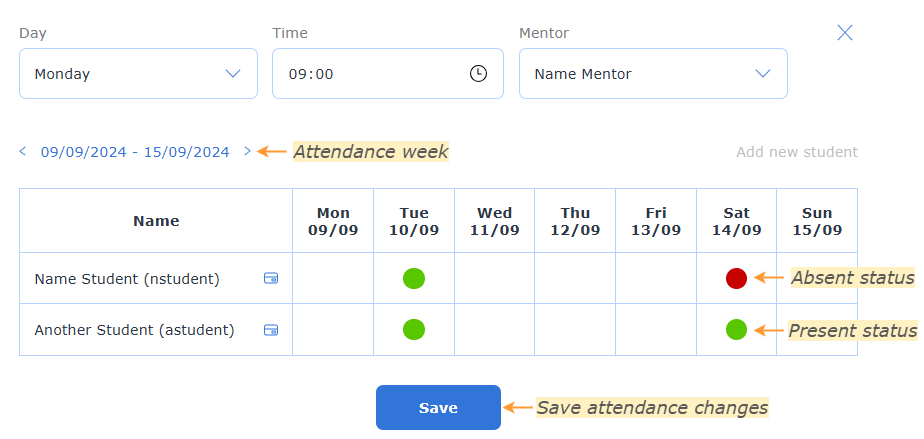

When you log in to the system, you will see the following screen:

Home screen is empty, we are open to hear what you will want to see on the home screen after trying the system in work.
On the left side of the screen, you will see the navigation bar. Here you can access all the features of the system.
On the right top corder, there is a quick actions bar with "Log out" and "Home" links.
Structure of the system
The system is divided into the following sections:
Division
Branch
Group
Account status
Each user in the system has one of the following statuses:
Active
Blocked
Archived
Active users can log in to the system and perform actions. Blocked users cannot log in, but their data is still stored in the system. Archived users are hidden from the system and cannot log in.
Register new users
You can create new mentors and students
User login information is generated automatically and will be shown in the confirmation window.
By default password is equal to username (must be changed by user after login).
If username happens to be too short to be set as a password, "1234" is added to the end of it. For example:
User named "James Potter" will have following credetials: "jpotter" as username, "jpotter" as password
User named "James Lee" will have following credentials: "jlee" as username, "jlee1234" as password
To register a mentor:
Click on the "Mentors" link in the navigation bar
Click on the green plus icon: "Add new mentor"
Fill in the form and click "Save"
To register a student:
Click on the "Branch menu" link in the navigation bar
Click on the group you want to add a student to
Click on the link: "Add new student"
Fill in the form and click "Save"
Block and archive
If for some reasons you want to prevent a user to have an access to a system, you can block or archive them. Blocking is set as a temporary access restriction, while archive can be seen as account deactivation.
Mentor account
Mentor accounts are managed from the "Mentors" section in navigation bar. There you can see the full list of mentors and change their statuses.
To block or archive a mentor, follow these steps:
Click on the "Mentors" link in the navigation bar
Find the mentor you want to block or archive
Click on the "Block" or "Archive" button
Follow the same steps to unblock or restore accounts of mentors.

Student account
Blocked students are shown with a red lock icon next to their name. Archived students are no longer shown in groups.
You can see the full lists of blocked students in "Blocked" section of navigation menu
You can see the full lists of archived students in "Archived" section of navigation menu
To block or archive a student, follow these steps:
Click on the "Branch menu" link in the navigation bar
Click on the group the student is in
Find the student you want to block or archive
Click on a card icon next to the student you want to block or archive
Click on the "Block student" or "Archive student" link
If you blocked a student, press "Save"
To unblock student:
Click on the "Branch menu" link in the navigation bar
Click on the group the student is in
Find the student you want to unblock
Click on a card icon next to the student's name
Click on the "Unblock student"
Press "Save"
Alternatively:
Click on the "Blocked" link in the navigation bar
Find the student you want to unblock
Choose a group, if you want to move student to another one
Click on the "Unblock" action
To restore student's account from archive:
Click on the "Archived" link in the navigation bar
Find the student you want to restore
Choose a group you want to assign to a student
Click on the "Restore" action
Creating and managing groups
Groups are used to organize students. Each group can have one mentor assigned to it. To create a new group, follow these steps:
Click on the "Branch menu" link in the navigation bar
Click on a plus icon next to the branch's name: "Add new group"
Choose group's timetable
Assign a mentor (group cannot exist without mentor)
Click "Save"
You can always edit group's information, but it is not possible to delete it.
To edit group:
Click on the "Branch menu" link in the navigation bar
Click on the group you want to edit
Change the needed information
Note: no need to press "Save" button, just close the pop-up window
Tracking attendance
Attendance is checked and tracked by mentors.
There are three attendance statuses: present (red), absent (green) and unchecked (none).
To see attendance:
Click on the "Branch menu" link in the navigation bar
Click on the group you want to see attendance for
Attendance of students is loaded by week. You can use arrows around the date to navigate through attendance history.
To change attendance status, click on the cell corresponding to the student and date, and then press "Save".
Attendances are not saved automatically, pressing "Save" is mandatory for each week.

Profile settings
To change your profile settings, click on the "Settings" link in the navigation bar. You will see the following screen:
Here you can change your password and profile picture. It is not possible to change any other personal information

 Attendances are not saved automatically, pressing "Save" is mandatory for each week.
Attendances are not saved automatically, pressing "Save" is mandatory for each week.